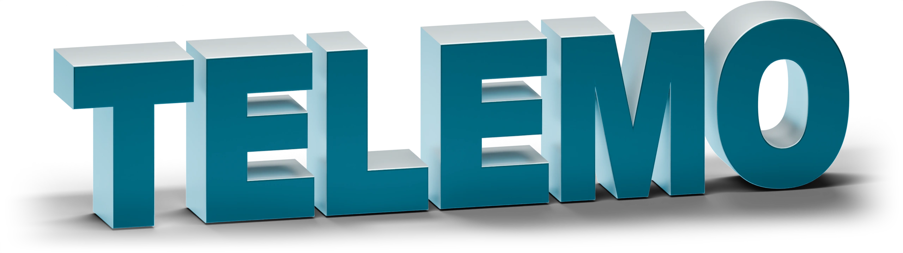

01
TELEMO向け候補ダーク・プロダクト
Raycast
REFERENCE 参照画像
TELEMO HTML構成案

参照ポイント中心の見出しと製品ビジュアルに視線を集める。
TELEMOへの応用深い青緑を背景に、TELEMOの立体ロゴと短いコピーを主役に。
HERO REFERENCES & HTML CONCEPTS — 2026.10.30
Web Design Clipの参照画像と、TELEMO向けのHTML構成案。
写真、余白、文字、プロダクトの見せ方を比べられます。
20 / 20 案
参照画像：Web Design Clip掲載スクリーンショットの上部。HTML案：既存のTELEMO素材を使った構成案です。
Raycast
REFERENCE 参照画像
TELEMO HTML構成案

参照ポイント中心の見出しと製品ビジュアルに視線を集める。
TELEMOへの応用深い青緑を背景に、TELEMOの立体ロゴと短いコピーを主役に。
Tines
REFERENCE 参照画像
TELEMO HTML構成案
参照ポイント大きなタイポグラフィと柔らかな地色を組み合わせる。
TELEMOへの応用アイボリーと青緑で、AIサービスの先進性を穏やかに伝える。
FANCL SKIN PATCH｜ファンケルオンライン
REFERENCE 参照画像
TELEMO HTML構成案

参照ポイント明るい人物写真を横に並べ、清潔感と親近感をつくる。
TELEMOへの応用営業現場の人物写真と白い余白で、人を支えるAIを表現。
調光スルーカーテン「スリーヌ」｜トーソー株式会社（TOSO）
REFERENCE 参照画像
TELEMO HTML構成案
参照ポイント写真を広く使い、見出しを小さく添える。
TELEMOへの応用明るいコールセンター写真を一面に使い、現場の空気を伝える。
Maison Ladurée Paris
REFERENCE 参照画像
TELEMO HTML構成案
参照ポイント落ち着いた写真と繊細な文字で、ブランドの世界観を見せる。
TELEMOへの応用細いフレームと明朝体を使い、営業ノウハウの蓄積を落ち着いて伝える。
一煎
REFERENCE 参照画像
TELEMO HTML構成案
参照ポイント二分割の写真と縦方向の文字で、誌面のように構成する。
TELEMOへの応用現場の会話と運用サポートを二枚の写真で並べる。
CAMPANOLA カンパノラ オフィシャルサイト｜CITIZEN
REFERENCE 参照画像
TELEMO HTML構成案
参照ポイント広い背景と小さな人物・製品の対比で、奥行きをつくる。
TELEMOへの応用都市の遠景とTELEMOのロボットで、営業の広がりを表す。
万年筆 CUSTOM〈カスタムシリーズ〉 | PILOT
REFERENCE 参照画像
TELEMO HTML構成案
参照ポイント大きな製品写真と控えめな文字で、質感を際立たせる。
TELEMOへの応用立体ロゴを大きく見せ、説明を減らして印象を残す。
可能性デベロッパー｜森トラスト株式会社
REFERENCE 参照画像
TELEMO HTML構成案
参照ポイント大きな写真を主役にし、コピーを下段にまとめる。
TELEMOへの応用営業現場の写真と濃紺のコピー帯で、内容と世界観を整理する。
TrueKind
REFERENCE 参照画像
TELEMO HTML構成案
参照ポイント近接した写真と短い文字を合わせ、臨場感をつくる。
TELEMOへの応用応対中の人物写真を主役に、声を扱うサービスとして伝える。
Capless LS｜PILOT
REFERENCE 参照画像
TELEMO HTML構成案
参照ポイント黒い余白の中に製品を置き、輪郭と素材感を引き立てる。
TELEMOへの応用黒に近い青緑で立体ロゴを際立たせ、情報を絞る。
トヨタ センチュリー ブランドサイト | トヨタ自動車
REFERENCE 参照画像
TELEMO HTML構成案
参照ポイントニュートラルな背景と中央の製品で、静かな存在感をつくる。
TELEMOへの応用温かみのある白を背景に、ロゴと短いコピーだけで構成する。
感動の瞬間を、ともに。｜福井銀行ブランドサイト
REFERENCE 参照画像
TELEMO HTML構成案
参照ポイントキャラクターと短いメッセージを左右に配置する。
TELEMOへの応用既存のTELEMOロボットを使い、相談しやすい表情にする。
ベネッセのDX戦略
REFERENCE 参照画像
TELEMO HTML構成案

参照ポイント暗い面と大きな写真、白地の文字を組み合わせる。
TELEMOへの応用文字を白い帯に載せ、現場の写真からメッセージを読み取りやすくする。
Trend 3D
REFERENCE 参照画像
TELEMO HTML構成案
参照ポイント横長の現場写真の中に、短いコピーを置く。
TELEMOへの応用コールセンターを広く見せ、サービスを使う場面を想像しやすくする。
らくしふ
REFERENCE 参照画像
TELEMO HTML構成案
参照ポイント説明と利用場面を左右に分け、導線を分かりやすく置く。
TELEMOへの応用サービスの一文説明、営業現場の写真、相談ボタンを一画面に収める。
Sun*（サンアスタリスク）| 新規事業開発支援
REFERENCE 参照画像
TELEMO HTML構成案
参照ポイント見出しと相談フォームを横に並べ、行動を選びやすくする。
TELEMOへの応用右側を相談メニューに置き換え、音声確認と導入相談へつなぐ。
加藤国際特許事務所
REFERENCE 参照画像
TELEMO HTML構成案
参照ポイント文字を区切って配置し、写真・イラストと組み合わせる。
TELEMOへの応用見出しを二段の白い帯に分け、ロボットとともに読みやすく見せる。
FLITE
REFERENCE 参照画像
TELEMO HTML構成案
参照ポイント左に説明、右に大きな製品カードを置く。
TELEMOへの応用余白の多い左右構成で、TELEMOのロゴと機能の入口を整理する。
くうきのかだい｜空気清浄機：シャープ
REFERENCE 参照画像
TELEMO HTML構成案
参照ポイント人物を大きく置き、空いた面に控えめなコピーを添える。
TELEMOへの応用営業担当者の写真と青緑の文字で、落ち着きと人の温度を両立する。
検索語や絞り込みを変えてお試しください。
SOURCES & NOTES
参照画像の出典はWeb Design Clip [L]です。各カードから掲載ページと元サイトを開けます。画像は掲載スクリーンショットの上部を切り出したもので、取得日は2026年10月30日です。現在の元サイトの表示とは異なる場合があります。
右側は参照の構成をTELEMOへ応用したHTML案です。写真・立体ロゴ・ロボットは既存のTELEMO素材を使用しています。参照画像・元サイトのデザインの権利は各権利者に帰属します。
20件の出典情報を見る